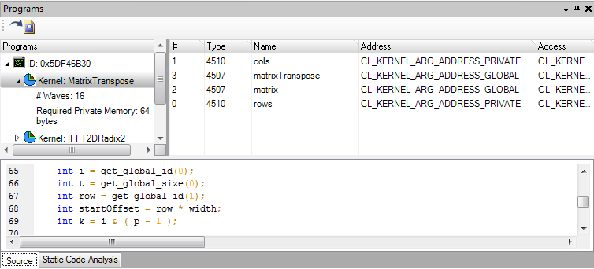

Programs View
Displays per-program information. Shows kernels in program, their source code and static code analysis.
Screenshot

Components
- Save source to file
- Per-kernel information(Note: Required Private Memory = GPR + stack)
- Rich textbox with selected kernel source
- Kernel parameter list
- Static code analysis